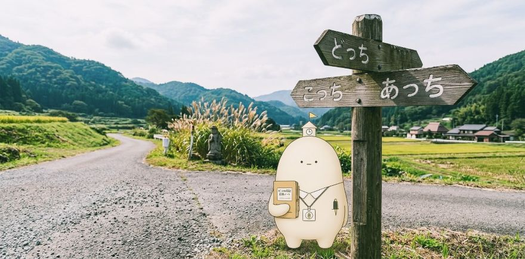

ようこそ、ピコぬ市へ。
何かを探しに来たものの、何を探しているのかわからなくなった方もご安心ください。
当市では、そのような状態を特に異常とはみなしません。
目的があいまいなまま市内をお過ごしいただくことも、ひとつの過ごし方として想定しております。

とりあえず、こんなものがあります
ピコぬ市には300を超えるページがあり、ゲーム、漫画、ラジオ、動画、読み物、外来シリーズ、各種ジェネレーターから、市の施設・制度まで、さまざまなものが置かれています。
- 🎮 ゲーム
- 📚 読み物・外来シリーズ
- 📻 FMピコぬ
- 🎬 動画
- 🧾 ジェネレーター・遊べるコンテンツ
- 🏥 キロクぬかクリニック
- 🏙️ 市役所・市の施設
- 🐈 猫関連コンテンツ
気分別のご案内
目的を言葉にできなくても、今の気分だけでお選びいただけます。
ちょっと笑いたい
何か読んでいたい
意味のわからないものを見たい
何か遊びたい
市について知りたい
もう何を探していたのか完全にわからない
そのような方のために、下に案内所を用意しております。
目的が定まらない方は、こちらをお使いください。市内のページの中から、ひとつをお選びしてご案内します。
なお、何を探しに来たのかわからないまま帰られても、市では特に問題ありません。